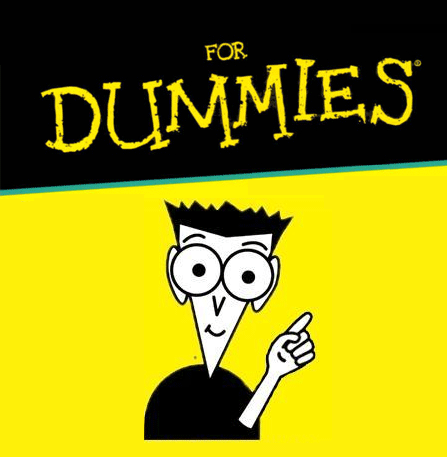

Para hacernos una idea más rápidamente de qué es y de las posibilidades de Storage vamos a empezar el tema con un ejemplo práctico.
Si esta es la primera vez que accedes a esta página y no has rellenado antes el formulario siguiente (como no habrá información guardada al respecto) en el siguiente cuadro el navegador te pedirá tu nombre ya que no lo sabe . Si escribes tu nombre y pulsas en el botón 'Guardar', las siguientes veces que accedas a esta página el navegador ya sabrá tu nombre y automáticamente te saludará por él (o al menos por el texto que escribiste -todavía no hay manera de saber si lo que escribiste es tu nombre real-).
¡Pruébalo!, escribe tu nombre en el segundo campo de texto, pulsa el botón "Guardar" y recarga la página.
¡Vaya!, no sé cómo te llamas
Escribe debajo tu nombre
Segunda oportunidad..
Si deseas borrar todos los datos localStorage (para probar esta página como si fuera la primera vez), pulsa el siguiente botón y luego recarga la página:
Este ejemplo sólo nos sirve para ver Storage en funcionamiento, pero no para desarrollarlo paso a paso, ya que no sería positivo empezar con el ojo morado (color #BB04A0). Para la parte práctica tenemos otro ejemplo bastante más sencillo. Antes de eso, nos queda por conocer un poco de información previa y las pálabras mágicas para luego -acompañados con la barita- ver qué sale de la chistera.
• Tipos de datos guardados
Como hemos visto con el ejemplo anterior, con HTML5 ya es posible guardar datos en el ordenador del usuario sin limitación de tiempo, sin que estos datos se borren en cada sesión, con una limitación de tamaño de 5 Mb, sin tener que disponer de ningún servidor, ni base de datos y sin tener que utilizar cookies.
Existen dos tipos de almacenamiento (de corta y larga duración):
sessionStorage: Los datos guardados permanecen mientras el usuario tiene el navegador abierto. Al cerrar el navegador los datos se borran automáticamente.
localStorage: Los datos guardados permanecen siempre, incluso si se cierra el navegador y se apaga el ordenador.
Es importante señalar que la información guardada es accesible sólo desde el mismo navegador que ha guardado los datos. Es decir, el localStorage de Chrome es diferente al localStorage de Opera o de Firefox. Por lo que se si guardan unos determinados datos desde Chrome, al acceder a la misma página con -por ejemplo- Firefox únicamente se podrán leer los datos guardados desde Firefox, no los generados desde Chrome.
• Las palabras mágicas
Aunque la utilización de localStorage es bastante sencilla hay que tener en cuenta que funciona bajo javaScript, por lo que el código correspondiente lo tendremos que colocar dentro del <head>, entre estas dos etiquetas:
<script type="text/javascript">
</script>
Guardar un dato
Para guardar un valor tenemos que hacer referencia a 3 datos:
a) localStorage (si los datos serán permanentes) o sessionStorage (si los datos se borrarán cuando el usuario cierre el navegador).
b) Un nombre que le daremos a esa información (este valor sólo sirve para poder hacer referencia a ella).
c) La información a guardar (normalmente escrita entre comillas).
Por ejemplo:
localStorage.nombre='Javier';
Este código guarda permanentemente el dato "Javier" dentro del dato llamado nombre.
Recuperar la información
Para leer o recuperar la información necesitamos también 3 datos:
a) localStorage (si los datos eran permanentes) o sessionStorage (si los datos tenían sólo vigencia dentro de la presente sesión).
b) El nombre que le dimos a esa información cuando se guardó.
c) Una variable donde guardar dicha información (o en su defecto un alert que muestre en pantalla dicha información).
Por ejemplo:
alert('La información recuperada ha sido '+ localStorage.nombre);
El 'alert' sirve para que aparezca una ventana flotante de alerta con un texto que será 'La información recuperada ha sido ' más la información llamada nombre guardada en localStorage.
Eliminar un dato
Para eliminar únicamente un dato utilizamos la orden 'localStorage.removeItem()':
localStorage.removeItem('nombre');
En este caso eliminamos los datos (en este ejemplo de carácter permanente) llamados como 'nombre'.
Eliminar todos los datos existentes
localStorage.clear();
sessionStorage.clear();
Con este código eliminamos todos los datos, tantos permanentes como los que tienen vigencia dentro de la presente sesión del navegador.
Para conocer cuántos datos hay guardados...
Ya, para rizar el rizo, podemos conocer cuántos elementos (permanentes o no) hay guardados utilizando el atributo '.length'.
Como con sólo conocer por encima el código no hacemos gran cosa, vamos a construir paso a paso el siguiente ejemplo.
Se trata de un contador que va contando las veces que hemos entrado en esta página con este navegador . (Recarga varias veces la página para comprobar como este contador va incrementándose, incluso si cierras el navegador y lo sigues intentando mañana).
Visitas: 1 veces.
Dentro del <head>, añadimos el siguiente código:
(Para probarlo, puedes utilizar el útil y a la par sencillo método de copiar y pegar (sin añadir nada más) en un documento vacío con formato .html o bien descarga el fichero comprimido con el ejemplo haciendo clic aquí).
Si tienes conocimientos mínimos de programación es posible que entender este código no sea como leer los poemas homéricos de Aristarco de Samotracia (siglo II a.C.) en versión original.
Para el resto de mortales voy a intentar explicarlo línea a línea sin subtítulos y en versión megafácil...

Como queremos que la información sea permanente (que no se borre cuando cerremos el navegador) utilizamos siempre 'localStorage'.
La información tiene que tener un nombre, así que por no llamarla 'Fulgencia' o 'Remigio', hemos decido llamarla 'veces' (ya que lo único que vamos a guardar es un número, que será el número de veces que se ha entrado en la página).
Por lo tanto para acceder (para leer o guardar) esta información en vez de gritar 'Fulgencia' o 'Remigio' lo haremos utilizando el palabro: 'localStorage.veces'.
Empezemos a despedazar el código línea a línea: (Si durante la explicación sientes mareos, pérdida de visión momentánea, vómitos, palpitacions agudas o se te para el corazón de golpe haz una pausa prolongada en la lectura y no lo vuelvas a intentar).
if (localStorage.veces==undefined){
La traducción al castellano actual sería: si este dato tiene un valor no definido (undefined), es decir; si no existe. Deducimos que si no existe quiere decir que es la primera vez que se ha accedido a esta página...
localStorage.veces=1;
Si se cumple la condición anterior escribirá un 1 dentro del dato llamado localStorage.veces (que recordamos que estaba vacío).
} else {
Sino (es decir, si el dato 'NO es undefined', que es lo mismo que decir, si el dato 'tiene algún valor')..
Entonces le sumará 1 al valor que tenga localStorage.veces en ese momento.
El 'Number' que hay enmedio de la línea no es para complicar más aún la lectura (como algunos están pensando). Sirve para que sume 1 y no añada 1, ya que si a 1 se le añade 1 el resultado es 11 (cosa que no nos interesa), pero si a 1 se le suma 1 el resultado es 2 (que es lo que queremos que realmente ocurra).
Finalmente escribe en el documento (osea en la página web) el texto "Visitas: " seguido del dato que ha leído en líneas anteriores y después le añade "veces." para que muestre algo así como "Visitas: 2 veces".
Si queremos que esta información esté integrada en un lugar determinado del html y además esté maqueda con CSS3, entonces tendremos que recurrir a javaScript, jQuery o similares.